Teoría Clasica de Test (TCT)
Módulo teórico
La teoría clásica de test es la forma más sencilla de analizar un test que considera la información entregada por el test como un todo. En otras palabras, utiliza el puntaje observado como una estimación suficiente de la habilidad del individuo.
1 Formulación matemática
\[ X_{i} = V_{i} + E_{i} \]
Donde:
- \(X_i\) = Puntaje observado.
- \(V_i\) = Puntaje verdadero.
- \(E_i\) = Error de medición.
2 Supuestos de la TCT
Primero es importante comprender qué un supuesto en una teoría con un sustrato matemático.
- Supuesto: aquellas cosas que debemos dar por ciertas si queremos perseguir ese camino de demostración, en otras palabras, son planteamientos sin demostración que quien utiliza la teoría debe dar por hecho.
Supuestos TCT:
La puntuación verdadera (\(V_i\)) es la esperanza matemática de la puntuación empírica.
Formulación MIDE: Todos los ítems miden con error, pero estos errores se ‘cancelan’ entre sí. El promedio de los errores de medición es cero.
Formulación matemática: \(V = E(X)\)
Explicación en simple: “Se define la puntuación verdadera de una persona en un test como aquella puntuación que obtendría como media si se le pasase infinitas veces el test.” [@muniz2010teorias]
No existe relación entre la cuantía de las puntuaciones verdaderas de las personas y el tamaño de los errores que afectan a esas puntuaciones.
Formuación MIDE: Todos los ítems miden con error, pero estos errores no aumentan o disminuyen según el nivel de habilidad del evaluado: El error de medición no esta correlacionado con la habilidad del examinado (Puntaje verdadero).
Formulación matemática: \(r(v,e) = 0\)
Explicación en simple: “El valor de la puntuación verdadera de una persona no tiene nada que ver con el error que afecta esa puntuación, es decir, puede haber puntuaciones verdaderas altas con errores bajos, o altos, no hay conexión entre el tamaño de la puntuación verdadera y el tamaño de los errores.”[@muniz2010teorias]
Los errores de medida de las personas en un test no están relacionados con los errores de medida en otro test distinto.
Formulación MIDE: Todas las personas responden la prueba con error, pero este error es ‘único’ para cada persona : Los errores de medición de dos estudiantes no están correlacionados entre sí.
Formulación matemática: \(r(e_{j}, e_{k}) = 0\)
Explicación en simple: “No hay ninguna razón para pensar que los errores cometidos en una ocasión vayan a ocurrir en otra aplicación”.
3 Análisis de Ítems y pruebas
Resumen estadístico TCT:
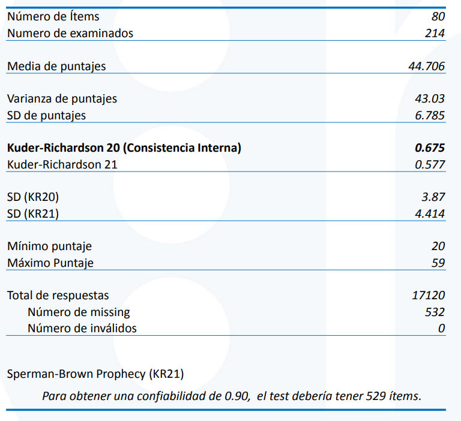
Cómo ordena las personas (por puntaje obtenido):
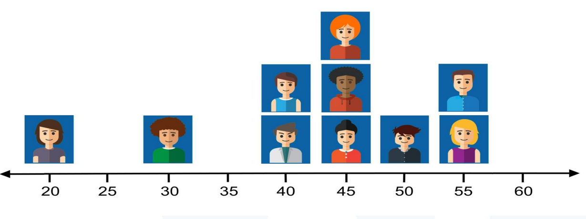
4 Error de medición:
- Como en todo modelamiento estadístico, es importante cuantificar el error aleatorio del proceso inferencial.
- El error de medición permite cuantificar cuán preciso es el puntaje resultante de un test.
- Se expresa en la misma escala de las puntuaciones observadas.
- Permite construir un Intervalo de Confianza para el puntaje verdadero.
- Se relaciona de forma inversa con la confiabilidad.
5 Ventajas y Limitaciones
Ventajas:
- Es fácil de interpretar.
- Los cálculos son sencillos de realizar en cualquier computador y software estadístico.
Limitaciones:
- La estimación de habilidad de los examinados se basa en sus respuestas al test como un todo, y no en el funcionamiento particular de los ítems.
- Estimaciones de habilidad dependen de los ítems administrados y de la muestra utilizada.
- Los parámetros de los ítems dependen de la muestra en que son estimados.
- El error de estimación se basa en el comportamiento de un grupo.
- Parámetros de los ítems y estimaciones de habilidad se expresan en escalas diferentes.
6 Estadígrafos relevantes en TCT
En este apartado se presentará una introducción conceptual a cada estadígrafo. Más adelante, en capitulos de profundización, se abordarán los detalles matemáticos y limitaciones de estos estadígrafos.
Alpha de Cronbach: Es una medida de la consistencia interna de prueba, es decir, qué tan relacionados están los ítems de una prueba si los consideramos como un conjunto.
Tasa de omisión: Es la proporción de personas que omite cada ítem. Se puede leer de forma aislada, donde se verifica que un ítem singular tenga una omisión baja. También se puede ver de forma posicional, donde se estudia el recorrido que hizo el alumno por los ítemes ordenados para verificar si existe un patrón de omisión.
Proporción de respuesta: Es la proporción de personas que marca cada una de las respuestas. La proporción de respuestas de la alternativa que figura como respuesta correcta es idéntico a la dificultad del ítem.
Biseriales: Son diferentes medidas posibles de correlación entre puntaje total obtenido por los alumnos que marcaron esa alternativa y los alumnos que no marcaron la alternativa. La biserial de la respuesta que figura como correcta es idéntico a la discriminación del ítem.
Dificultad: Es la proporción de personas que tiene correcto el ítem.
Discriminación: Es una medida de la diferencia en puntaje total de alumnos con buen y mal rendimiento en un ítem específico. Existen diversos métodos para calcularla en teoría clásica.
7 Dificultad
Se mide para cada ítem como la proporción de personas que tuvieron ese ítem correcto.
\[ Dificultad_i = \frac{cantidad\ de\ respuestas\ correctas_i}{cantidad\ total\ de\ respuestas} \]
Donde:
\(Dificultad_i\) = dificultad del ítem i.
\(cantidad\ de\ respuestas\ correctas_i\) = cantidad de respuestas correctas para el ítem i.
8 Discriminación
Conceptualmente indica la capacidad de la pregunta de diferenciar entre personas con alta y baja habilidad del constructo que se pretende medir.
Se puede medir de diversas formas:
Forma Básica:
\[ Discriminación_i = prop_i(p_i=1)\ de\ puntajes\ totales\ altos\ - prop_i(p_i=1)\ de\ puntajes\ totales\ bajos \]
Donde:
- \(prop_i(x_i = 1)\) = proporción de respuestas correctas para el ítem i.
Correlación item_total:
\[ Discriminación_i = p_{it} = \frac{Cov(i,t)}{\sigma_i\sigma_t} \]
Donde:
\(Discriminación_i\) = Discriminación del ítem i.
\(i\) = Puntaje en el ítem i del sujeto.
\(t\) = Puntaje total obtenido por el sujeto.
\(P_{it}\) es la correlación de Pearson entre i y t.
Punto biserial:
| Con cantidad de casos | Con probabilidades |
|---|---|
| \[ r_{pb} = \frac{\bar{x}_{p = 1} - \bar{x}_{p = 0}}{\sigma_T} \sqrt{\frac{n_1 . n_2}{n^2}} \] | \[ r_{pb} = \frac{\bar{x}_{p = 1} - \bar{x}_{p = 0}}{\sigma_T} \sqrt{pq} \] |
Donde:
|
Donde:
|
Existen estratégicas matemáticas para obtener punto-biseriales y correlaciones item-test con más información. Algunas son:
Para el puntaje total, NO considerar el puntaje del ítem evaluado, es decir, si la prueba tenía 15 puntos máximo para efectos de este análisis tiene 14. Esto es lo que se conoce como un cálculo de biserial item-reminder.
Algunos cálculos de biserial en lugar de calcular la diferencia de p=1 - p=0, utilizan la media de todos los sujetos de esta forma: p=1ó0 - p=0.
9 Output tipo de TCT de la unidad
9.1 Dificultad:
Cuando se realiza un análisis de dificultad se tiene que plantear un rango de corte, generalmente simétrico entre ambos extremos. Este rango varía según las exigencias y características de la prueba/población/propósito.
Para este ejemplo se utiliza un estándar de algunas pruebas internacionales de 0.15 puntos, entonces:
Menor a 0.15: ítem difícil.
Mayor a 0.85: ítem fácil.
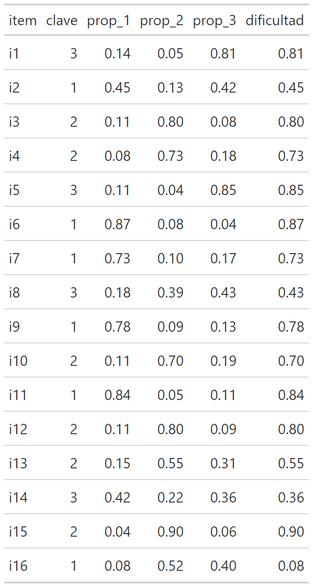
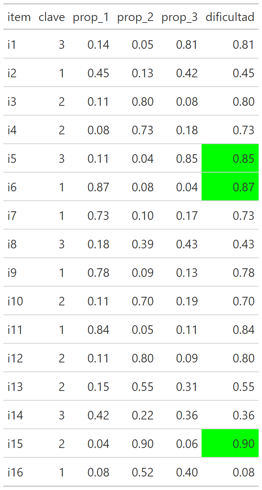
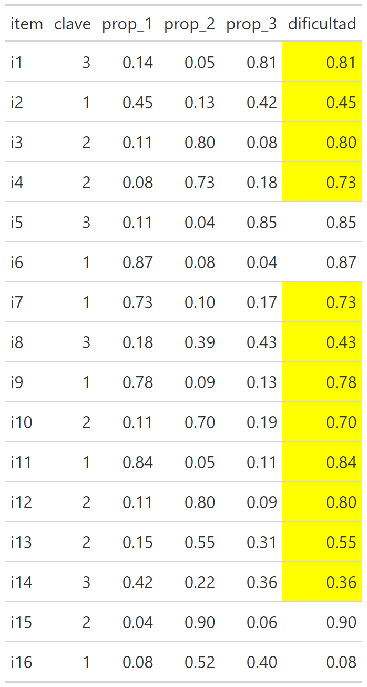
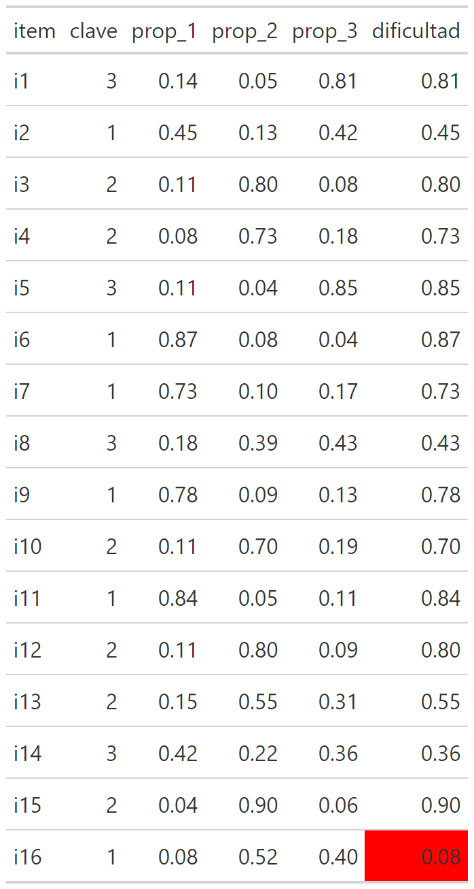
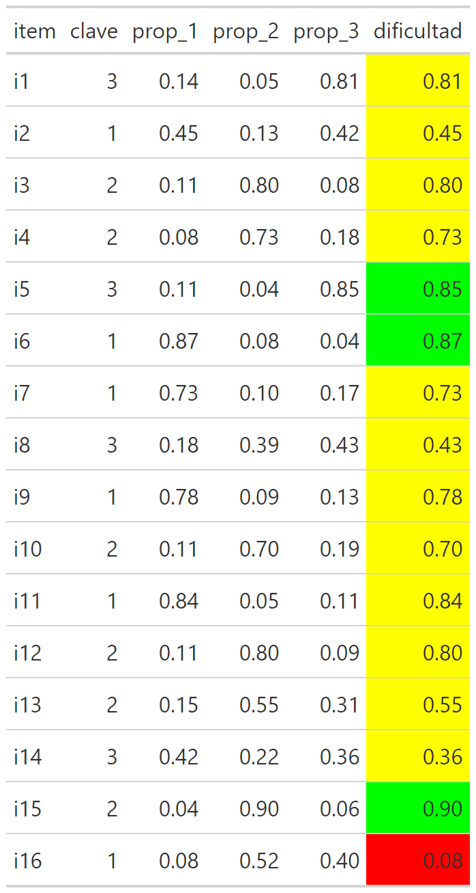
9.2 Discriminación
Cuando se analiza la discriminación se suelen utilizar estándares similares a la evaluación de una correlación, entonces:
Mayor a 0.3: discriminación suficiente.
Menor a 0.3: discriminación insuficiente.
Dicho lo anterior, a veces, considerando otras ventajas psicométricas que tenga un ítem se permiten discriminaciones en un rango 0.15 - 0.3 a las que llamaremos discriminación media.
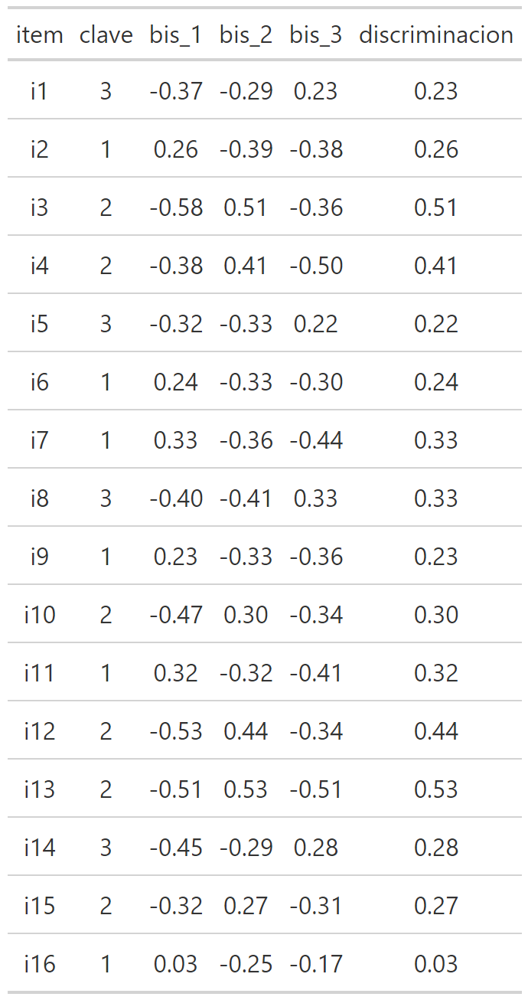
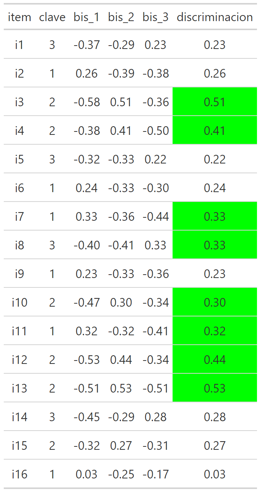
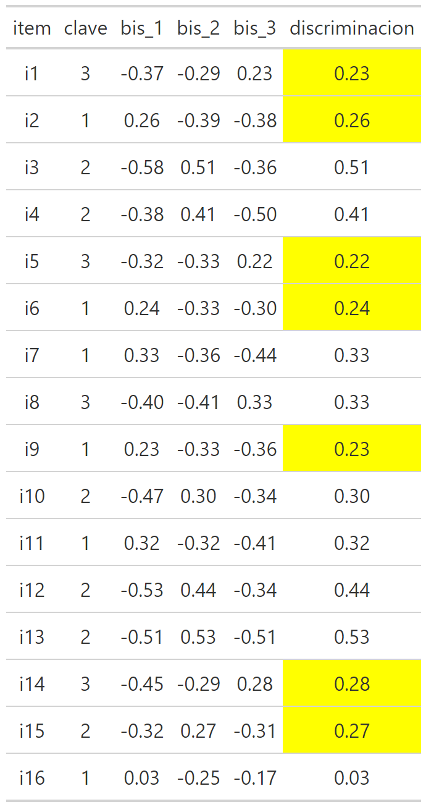
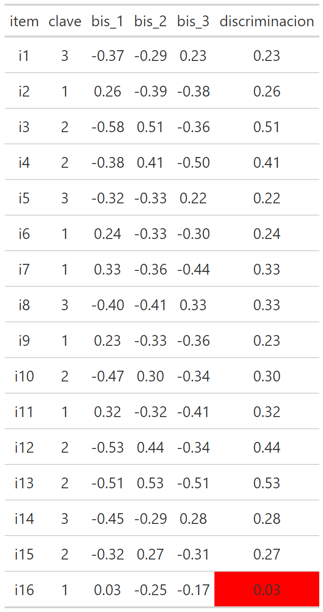
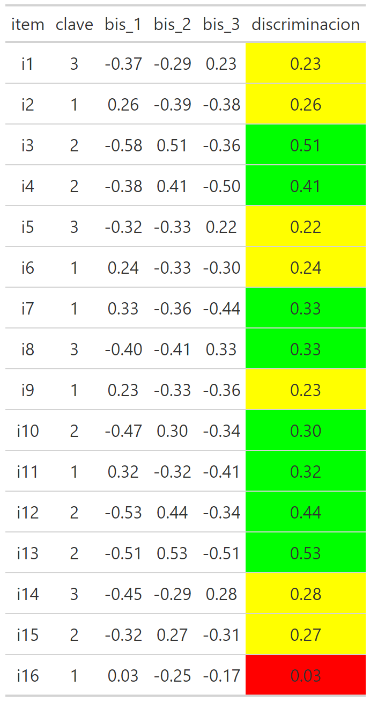